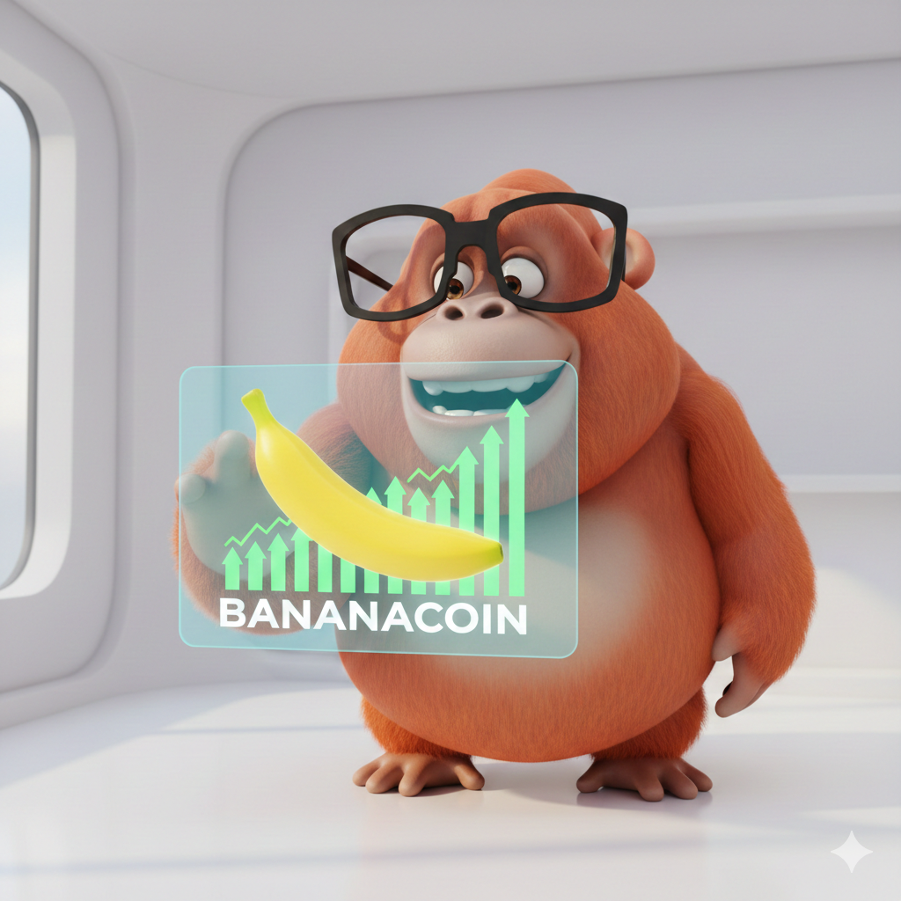
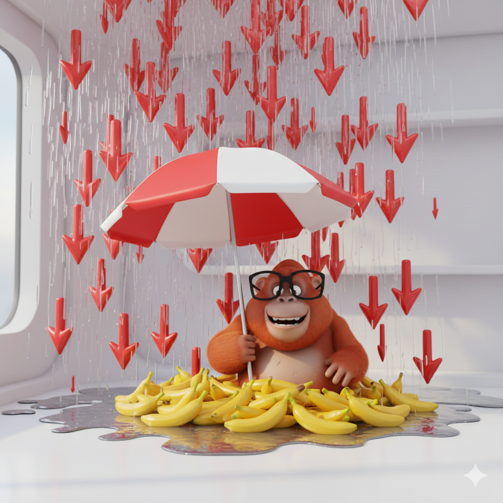
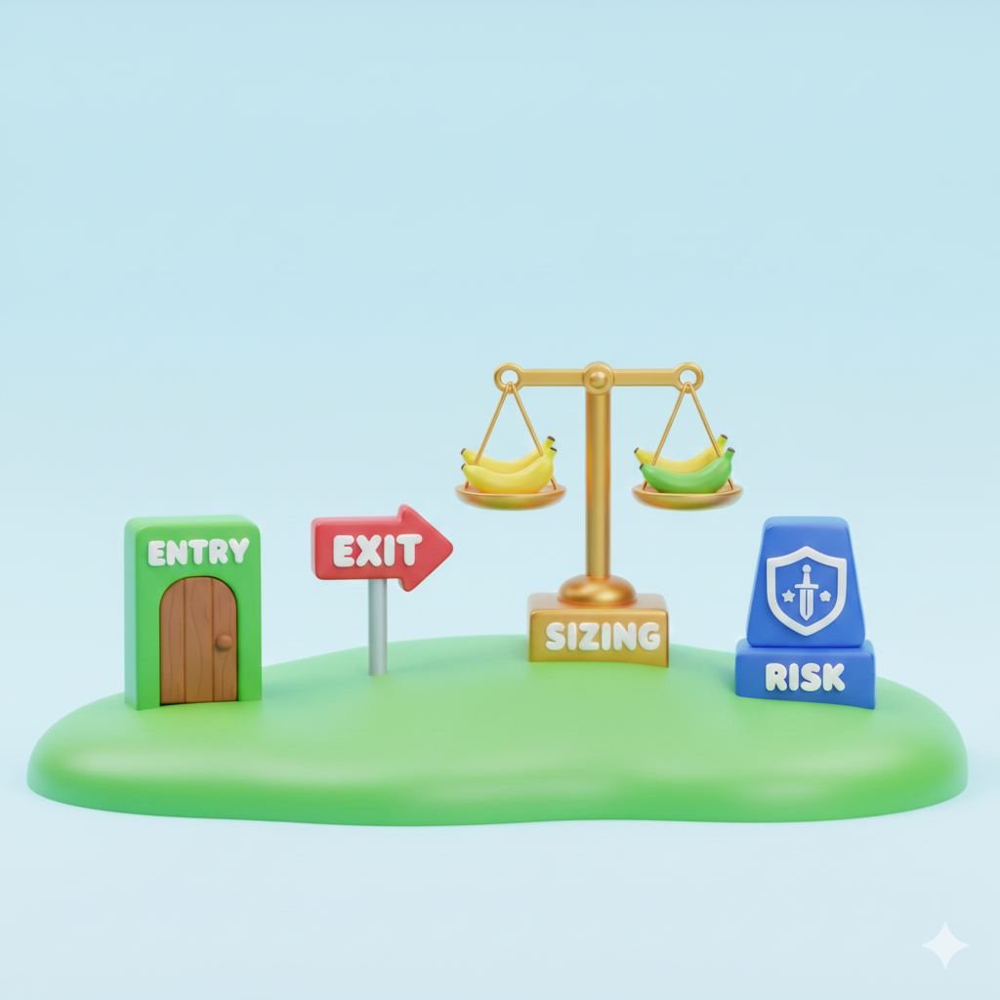
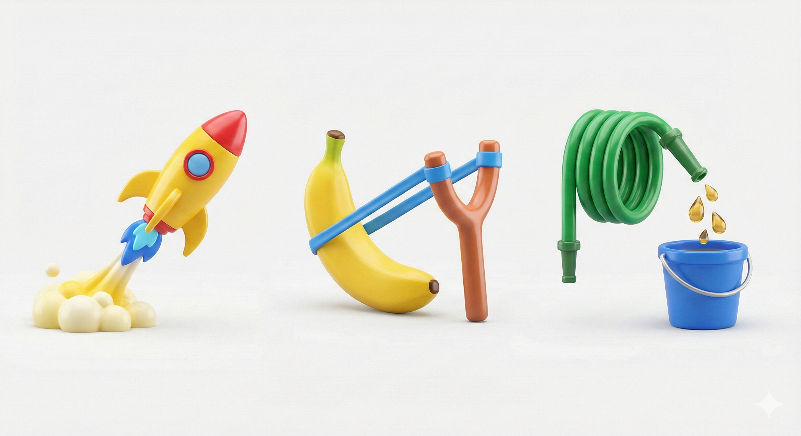

신중한 오랑우탄처럼 투자하라 Trade Like a Prudent Orangutan
바나나 냄새 나면 들고 간다. 냄새 없으면 던진다. 우끼우끼.
퀀트의 핵심은 수학이 아니라 규칙입니다.
Smell banana, hold. No smell, drop. Oook-oook.
Quant is about rules, not just
complex math.
ukkie> check-regime
시장 분석: [바나나 냄새 감지!]Market: [Banana Scent Detected!]
Regime: TREND_NORMAL
전략 상태: [진입 대기 중]Strategy: [Ready for Entry]
ukkie> █

바나나 냄새?Banana Scent?
신중한 진입Prudent Entry
오랑우탄 전략 검증법 Orangutan Validation
진짜 바나나인가? (Edge)Is it a Real Banana? (Edge)
"겉보기에 노란 돌맹이는 바나나가 아니다. 수수료, 슬리피지 다 빼고 배가 불러야 진짜다.""A yellow stone looks like a banana but it's not. It must fill your belly after fees and slippage."
생존이 먼저다 (Risk)Survival First (Risk)
"한 방에 죽으면 나쁜 전략. 얼마나 오래 굶을 수 있는지(MDD) 먼저 봐라. 죽은 원숭이는 말이 없다.""A strategy that kills you in one shot is bad. Check how long you can starve (MDD). Dead monkeys can't trade."
손이 닿아야 먹는다 (Execution)Reach to Eat (Execution)
"아무리 맛있는 바나나도 손 안 닿으면 그림의 떡. 체결 안 되는 신호는 그냥 상상일 뿐이다.""A banana out of reach is useless. Signals that don't get filled are just pure imagination."

전략의 뼈대 딱 4개 The 4 Pillars of Rule

신호 진입 (Entry)Entry Signal
언제 나무에 올라갈지 결정하는 냄새.The scent that tells you when to climb the tree.
수익 청산 (Exit)Exit Logic
바나나를 따고 언제 내려올지 결정.Deciding when to get down after picking the banana.
사이징 (Size)Position Sizing
얼마나 많은 바나나를 한 번에 담을지.How many bananas to carry at once.
리스크 컷 (Risk)Risk Cut
가지가 부러질 것 같으면 즉시 탈출.Immediate escape if the branch looks weak.
단순하지만 강한 뼈대Simple but Strong Skeletion

모멘텀 (Trend)Momentum
"무리(추세) 따라가면 산다. 근데 숲이 가만히면 계속 헛손질한다.""Follow the herd to live. But if the forest is still, you keep swinging empty hands."
평균회귀 (Reversion)Mean Reversion
"가지 휘면 원래 돌아오는데, 부러지는 순간이면 같이 떨어진다.""Bent branches snap back, but if they break, you fall together."
캐리/베이시스Carry/Basis
"매일 바나나 조금씩 주는 나무도, 어느 날 독나무로 바뀐다.""A tree that gives tiny bananas daily can become a poison tree one day."
오랑우탄이 피하는 함정Pitfalls to Avoid
| 함정Pitfall | 오랑우탄의 경고Whale's Warning |
|---|---|
| 백테스트 과최적화Overfitting | "과거 바나나 위치만 외우면, 새로운 숲에서 굶는다.""Memorizing past banana locations leaves you hungry in a new forest." |
| 거래비용 무시Ignoring Costs | "바나나 땄는데 수수료로 다 뺏기면 남는 게 없다.""If you pick a banana but lose it all to fees, you have nothing." |
프로덕션을 향한 여정The Path to Production
섀도우 모드Shadow Mode
실시간 시장 감시 및 신호 로깅. 리스크 제로.Live monitoring and signal logging. Zero risk.
페이퍼 트레이딩Paper Trading
테스트넷 실전 체결. 슬리피지 검증.Testnet execution. Validating slippage.
라이브 알파Live Alpha
소액 실전 투입. 견고함 증명.Small scale real trading. Proving robustness.
프로덕션Production
멀티 자산 포트폴리오 본격 운용.Full scale asset management.